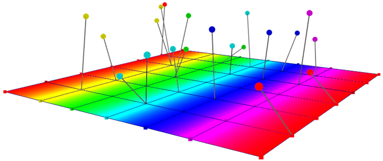
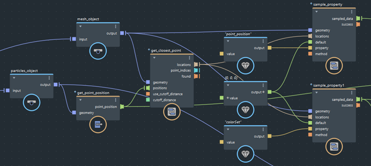

使用 get_closest_point 节点返回网格、股或点对象上每个输入定位的最近点。然后，可以使用点位置或点索引访问几何体上的特性值。

在上面的示例中，粒子的定位用于获取网格上最近的点，这些位置用于对存储在网格顶点上的颜色值进行采样。还会对位置的定位进行采样，以从粒子创建股。
要查找几何对象的最近点，然后访问特性值，请执行以下操作：
将 get_closest_points 节点添加到图表中。
将具有所需数据值的对象连接到 geometry 输入。
将需要其最近位置的定位连接到 positions 输入。对于许多典型效果，它们通常是另一个几何对象的 point_position 值。
根据需要，设置 use_cutoff_distance 和 cutoff_distance。
cutoff_distance 的球体内搜索点。如果几何体在该球体内没有点，则 found 数组的相应元素为 false，输出 locations 数组的相应元素是无效位置。此外，indices 数组的相应元素为 0，这是有效的点索引，但可能不是最近点，因此请仔细检查 found 数组。使用 get_closest_point 节点的输出以访问几何体上的特性值：
locations 输出连接到一个或多个 sample_property 节点，以立即对几何特性进行采样（请参见对位置的几何特性进行采样）。在这些情况下，您通常在连接到 get_closest_point 节点的同一几何体上进行采样。indices 输出访问几何体上几何特性的数据数组（请参见获取并设置几何对象的特性）。found 输出与 if 节点结合使用，来控制图表中按定位进行的后续操作，包括是否对特性进行采样。这在使用 indices 输出时尤其重要，因为只要中止距离内没有点，以及当定位包含诸如 NaN 或 Inf 之类的值时，它将包含索引 0。 虽然 0 可能是几何体上的有效点索引，但在这种情况下，它并不对应于正确的点。